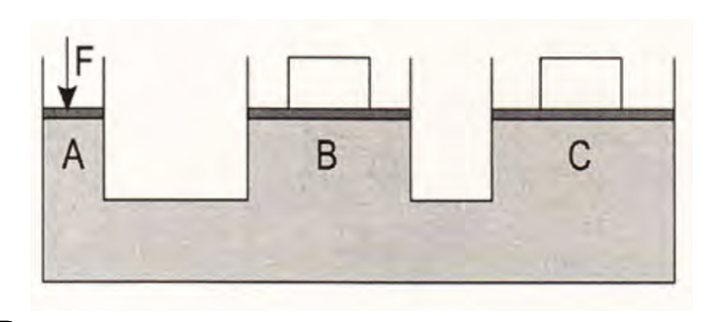

Tip📥 Material Original
B Bloque 1: Hidráulica
B.1 2014-2015
- Por una tubería horizontal circula un líquido de \(900 \text{ kg/m}^3\) de densidad a una velocidad de \(1,40 \text{ m/s}\). La sección transversal de la tubería es de \(10 \text{ cm}^2\) y la presión es de \(0,12 \text{ MPa}\). En la tubería existe un estrechamiento en el que la presión desciende a \(0,10 \text{ MPa}\). Se pide:
- El caudal de circulación del fluido.
- La velocidad del fluido en el estrechamiento y el diámetro del mismo.
- Por una tubería de \(2 \text{ cm}\) de diámetro circula agua con una velocidad de \(60 \text{ m/min}\). Se pide:
- El caudal de agua que circula por dicha tubería en unidades del S.I.
- El régimen de circulación si la viscosidad dinámica y la densidad del agua son \(0,087 \text{ Pa}\cdot\text{s}\) y \(1000 \text{ kg/m}^3\), respectivamente.
- En una estación de tratamiento de agua potable se bombea agua por una tubería de \(30 \text{ mm}\) de diámetro a una velocidad de \(4 \text{ m/s}\). Se pide:
- El caudal de agua en \(\text{l/min}\).
- Determinar la velocidad en otra sección de la tubería de \(20 \text{ mm}\) de diámetro.
- Por una tubería de \(0,95 \text{ cm}\) de diámetro circula aceite con un caudal de \(0,177 \text{ l/s}\) y una presión de \(500 \text{ MPa}\). Se pide:
- La velocidad de circulación del aceite.
- La potencia de la bomba de la instalación suponiendo un rendimiento del \(80\%\).
- Por una tubería horizontal de \(5 \text{ cm}\) de diámetro circula un líquido de densidad \(1,15 \text{ g/cm}^3\) a una velocidad de \(8 \text{ cm/s}\), registrándose una presión manométrica de \(1,5 \text{ kp/cm}^2\). La tubería se estrecha hasta tener \(2 \text{ cm}\) de diámetro. Se pide:
- Hacer un dibujo representativo de la situación considerada y calcular el caudal en unidades del S.I.
- Determinar la velocidad y la presión absoluta en la sección estrecha de la tubería en unidades del S.I. si la presión atmosférica es de \(10^5 \text{ Pa}\).
- En una fábrica de lubricantes para automoción, un aceite mineral es transportado para su almacenamiento por una conducción de \(4 \text{ cm}\) de diámetro, a una velocidad de \(0,3 \text{ m/s}\) y una presión de trabajo de \(9 \text{ MPa}\). La densidad y viscosidad cinemática del aceite son \(0,85 \text{ kg/dm}^3\) y \(2 \text{ cm}^2/\text{s}\), respectivamente. Se pide:
- El caudal que circula por la tubería expresado en \(\text{dm}^3/\text{min}\) y la potencia total de la bomba, suponiendo un rendimiento del \(87\%\).
- Determinar el régimen de circulación del aceite.
B.2 2015-2016
- Por una tubería horizontal de \(4 \text{ cm}\) de diámetro circula un caudal de \(200 \text{ dm}^3/\text{min}\) de un fluido hidráulico cuya densidad es \(925 \text{ kg/m}^3\). La tubería tiene un estrechamiento con un diámetro de \(25 \text{ mm}\). Se pide:
- La velocidad del fluido en los dos tramos de la tubería en \(\text{m/s}\).
- El régimen de circulación sabiendo que la viscosidad dinámica es \(0,006 \text{ N}\cdot\text{s/m}^2\).
- La bomba de un circuito hidráulico aporta un caudal de \(30 \text{ dm}^3/\text{min}\) de aceite por una tubería de \(2,5 \text{ cm}\) de diámetro a una presión de \(50 \text{ kp/cm}^2\). El aceite utilizado tiene, a la temperatura de trabajo, una densidad de \(0,85 \text{ g/cm}^3\) y una viscosidad dinámica de \(0,55 \cdot 10^{-3} \text{ Pa}\cdot\text{s}\). El rendimiento de la bomba es del \(75\%\). Se pide:
- El régimen de circulación del líquido por la tubería.
- La potencia de la bomba en vatios.
- Un camión cisterna transporta \(20 \text{ m}^3\) de gasoil. Posee una bomba de vaciado que funciona a \(12 \text{ MPa}\) de presión con un caudal de \(15 \text{ dm}^3/\text{s}\). La manguera que se utiliza tiene un diámetro de \(20 \text{ cm}\). Se pide:
- El tiempo de vaciado y la velocidad a la que circula el gasoil dentro de la manguera.
- La potencia absorbida por la bomba si tiene un rendimiento del \(85\%\).
- En una prensa hidráulica la fuerza ejercida en el émbolo menor es \(5 \text{ N}\). Se sabe que el radio del émbolo mayor es tres veces el radio del menor. Se pide:
- La fuerza obtenida en el émbolo mayor.
- El desplazamiento del émbolo mayor si el pequeño se ha desplazado un metro.
B.3 2016-2017
- Por una tubería horizontal de \(2\) pulgadas de diámetro (\(1 \text{ pulgada} = 2,54 \text{ cm}\)) circula agua con un caudal de \(60 \text{ litros por minuto}\). A la temperatura de operación, la viscosidad del agua es \(0,087 \text{ N}\cdot\text{s/m}^2\) y la densidad \(1 \text{ g/cm}^3\). El agua se destina a llenar un depósito de sección circular de \(10 \text{ m}\) de diámetro.
- Determine el régimen de circulación del líquido por la tubería.
- Calcule el tiempo que ha de transcurrir para que el nivel del depósito se eleve \(2 \text{ m}\).
- Sobre la compuerta de desagüe de una prensa el agua embalsada ejerce una fuerza de \(1250 \text{ N}\). La compuerta tiene \(2 \text{ m}\) de diámetro y al abrirla, el caudal de desagüe es \(15 \text{ m}^3/\text{s}\).
- Calcule la velocidad de salida del agua por el desagüe.
- Calcule la presión sobre la compuerta cuando está cerrada.
- Un grupo de presión bombea agua por una tubería horizontal de \(30 \text{ mm}\) de diámetro con una velocidad de \(4 \text{ m/s}\).
- Calcule el caudal de agua en litros por minuto.
- Determine la velocidad en un estrechamiento de la tubería cuyo diámetro es \(20 \text{ mm}\).
- Una tubería horizontal de \(180 \text{ mm}\) de diámetro conduce agua con una velocidad de \(10 \text{ m/s}\) a una presión de \(60 \text{ kPa}\). En un punto de la tubería existe un estrechamiento donde la presión se reduce a \(12 \text{ kPa}\). La densidad del agua es \(1000 \text{ kg/m}^3\).
- Calcule la velocidad del agua en el estrechamiento.
- Calcule el diámetro del estrechamiento.
- Una prensa hidráulica consta de dos émbolos cuyos diámetros son \(8 \text{ cm}\) y \(25 \text{ cm}\). Sobre el émbolo de menor diámetro se aplica una carga de \(100 \text{ kp}\).
- Calcule el peso, expresado en \(\text{N}\), que se puede elevar en el émbolo de mayor diámetro.
- Si se quiere elevar \(50 \text{ cm}\) la carga situada en el émbolo de mayor diámetro, determine el recorrido total del émbolo pequeño.
B.4 2017-2018
- Los dos pistones de una prensa hidráulica tienen por sección: \(A_1 = 5 \text{ cm}^2\) y \(A_2 = 200 \text{ cm}^2\). La fuerza aplicada perpendicularmente a la sección menor es \(98 \text{ N}\). Se pide:
- Dibuje un esquema de la prensa y calcule el peso que podrá levantar.
- Obtenga el desplazamiento del pistón mayor cuando el pistón pequeño baja \(0,1 \text{ m}\).
- Los émbolos de una prensa hidráulica tienen \(2 \text{ cm}\) y \(16 \text{ cm}\) de diámetro. Con esta máquina un operario desea elevar a una altura de un metro una carga de \(2 \cdot 10^4 \text{ N}\).
- Calcule la fuerza que será necesario aplicar en el émbolo pequeño.
- Determine el desplazamiento total que se ha producido en el émbolo pequeño. Si la carrera del cilindro es de \(8 \text{ cm}\), determine el número de emboladas necesarias para conseguir el desplazamiento total.
- Por una tubería horizontal de \(5 \text{ cm}\) de diámetro circula un líquido con densidad \(0,96 \text{ g/cm}^3\) y con un caudal de \(30 \text{ l/min}\). La tubería tiene un estrechamiento y la diferencia de las presiones medidas en ambas secciones es \(2 \cdot 10^4 \text{ Pa}\).
- Calcule en la parte ancha de la tubería, la sección y la velocidad a la que circula el líquido.
- Determine en la parte estrecha de la tubería, la velocidad a la que circula el líquido y el diámetro que tiene este tramo.
- Un líquido circula por una tubería horizontal de \(20 \text{ mm}\) de diámetro a una velocidad de \(3 \text{ m/s}\). La tubería cambia de sección en un punto dado de la instalación a un diámetro de \(10 \text{ mm}\).
- Calcule el caudal en la tubería expresándolo en \(\text{dm}^3/\text{min}\).
- Determine la velocidad del fluido en la sección menor.
- En una fábrica de reciclaje industrial se desea bombear aceite por una tubería a una velocidad de \(15 \text{ m/s}\) y a una presión de trabajo de \(10 \text{ MPa}\). El diámetro de la tubería es \(1,2 \text{ cm}\). Considere que la densidad y viscosidad cinemática del aceite son \(0,95 \text{ kg/l}\) y \(1,85 \text{ cm}^2/\text{s}\), respectivamente.
- Determine el caudal por la tubería, expresado en \(\text{l/min}\), y la potencia absorbida, si el rendimiento es del \(78\%\).
- Calcule e indique el régimen de circulación del aceite.
- Un coche de una tonelada de masa se apoya en sus cuatro ruedas con una superficie de \(50 \text{ cm}^2\) por cada rueda. El coche se eleva en un taller con un gato hidráulico donde los diámetros del émbolo menor y mayor de la prensa hidráulica son \(10\) y \(50 \text{ cm}\), respectivamente.
- Calcule la fuerza que hay que ejercer sobre el émbolo menor para levantar el coche.
- Calcule la presión que ejerce el coche sobre el suelo.
B.5 2018-2019
- Se observa que un grifo de agua de una casa tarda \(50 \text{ s}\) en llenar una garrafa de \(5 \text{ l}\) de capacidad. Las tuberías de la casa tienen un diámetro de \(18 \text{ mm}\) y la boca del grifo tiene un diámetro de \(1 \text{ cm}\) (densidad del agua \(1000 \text{ kg/m}^3\)).
- Calcule la velocidad del agua dentro de la tubería y en la boca del grifo.
- Obtenga la presión manométrica dentro de la tubería, teniendo en cuenta que la presión en la boca del grifo es la atmosférica.
- Por la parte ancha de un tubo de Venturi circula un líquido a una velocidad de \(4 \text{ m/s}\). La diferencia de presión entre la parte ancha y estrecha del tubo es \(7,2 \cdot 10^4 \text{ Pa}\). La sección de la parte estrecha es \(5 \text{ cm}^2\) y la densidad del líquido es \(0,81 \text{ g/cm}^3\).
- Determine la velocidad del líquido en el estrechamiento.
- Obtenga el caudal del líquido que circula por el tubo y la sección de la parte ancha del mismo.
- En una prensa hidráulica como la de la figura los émbolos A, B y C tienen una superficie de \(500 \text{ mm}^2\), \(60 \text{ cm}^2\) y \(70 \text{ cm}^2\), respectivamente. La fuerza ejercida en el émbolo menor es \(50 \text{ N}\).

{align=“center”}- Calcule las cargas que se pueden elevar en cada émbolo.
- A continuación se cambian las secciones de los émbolos B y C, manteniendo igual la sección y la fuerza ejercida sobre el émbolo A. Calcule las fuerzas resultantes en B y C, sabiendo que la fuerza en B es tres veces superior a la de C, y la suma de ambas vale \(2000 \text{ N}\). Determine también cuáles deben ser las nuevas secciones de los émbolos B y C.
- El grifo de llenado de la piscina de una casa aporta un caudal de agua de \(3 \text{ l/s}\). La piscina es cuadrada de \(5 \text{ metros}\) de lado y tiene una profundidad de \(1,5 \text{ m}\).
- Calcule el tiempo que tarda en llenarse la piscina con el grifo.
- Para acelerar el llenado de la piscina, se aporta también agua a \(150 \text{ kPa}\) de presión mediante una bomba de \(1,1 \text{ kW}\) (que funciona con un rendimiento del \(100\%\)). Determine el caudal que aporta la bomba y el nuevo tiempo de llenado con los dos suministros funcionando desde el principio.
- Un sistema oleohidráulico consta de una bomba que proporciona una presión de trabajo de \(8 \text{ MPa}\) al circuito. El diámetro de la tubería es \(10 \text{ mm}\) y la velocidad del fluido \(2,85 \text{ m/s}\). La densidad del aceite es \(0,9 \text{ kg/l}\) y su viscosidad cinemática \(1,72 \text{ cm}^2/\text{s}\).
- Obtenga el caudal y la potencia absorbida por la bomba si tiene un rendimiento del \(80\%\).
- Determine el régimen de circulación del fluido.
- Una tubería horizontal consta de dos tramos de diferente sección. Por el tramo ancho de \(15 \text{ cm}\) de diámetro circula agua a una velocidad de \(5,5 \text{ m/s}\). El tramo estrecho tiene un diámetro de \(6 \text{ cm}\). La densidad del agua es \(1 \text{ g/cm}^3\).
- Calcule el caudal y la velocidad a la que circula el líquido por el tramo estrecho de la conducción.
- Obtenga la diferencia de presión entre ambos tramos. Exprese el valor en \(\text{N/m}^2\).
C Bloque 2: Neumática (Cilindros)
C.1 2014-2015
- Un cilindro de doble efecto tiene un émbolo de \(90 \text{ mm}\) de diámetro y un vástago de \(20 \text{ mm}\) de diámetro. Se conecta a una red de aire comprimido y ejerce una fuerza en el avance de \(10000 \text{ N}\). Se pide:
- Presión de la red de aire comprimido.
- Fuerza que ejerce en el retroceso.
- Un cilindro de doble efecto ejerce una fuerza máxima de \(10000 \text{ N}\) y tiene una carrera de \(20 \text{ cm}\). Se pide:
- El diámetro que debe tener el vástago para que la tensión en el mismo no supere los \(8 \text{ MPa}\) al ejercer la fuerza máxima.
- El diámetro del émbolo teniendo en cuenta que el consumo de aire, medido a la presión de trabajo, es de \(3 \text{ litros}\) por ciclo.
- Una instalación neumática dispone de tres cilindros idénticos de doble efecto de \(12 \text{ cm}\) de diámetro de émbolo, \(2 \text{ cm}\) de diámetro de vástago y \(25 \text{ cm}\) de carrera. Los cilindros realizan cada hora \(60\), \(30\) y \(15\) ciclos, respectivamente. Las pérdidas por rozamiento son nulas y la presión de trabajo es de \(6 \text{ bares}\). Se pide:
- Fuerza de avance y retroceso de cada cilindro.
- Caudal de aire en condiciones normales que necesita la instalación para su funcionamiento.
- Un cilindro neumático de doble efecto tiene las siguientes características: diámetro del émbolo \(50 \text{ mm}\), diámetro del vástago \(10 \text{ mm}\), presión de trabajo \(6 \text{ bares}\), pérdidas por rozamiento \(10\%\) de la fuerza teórica. Se pide:
- La fuerza que ejerce en el avance.
- La fuerza que ejerce en el retroceso.
- Un cilindro neumático de doble efecto tiene las siguientes características: presión de trabajo \(8 \cdot 10^5 \text{ N/m}^2\), diámetro del cilindro \(60 \text{ mm}\), diámetro del vástago \(20 \text{ mm}\) y pérdidas por rozamiento \(4\%\) de la fuerza teórica. Se pide:
- Calcular la fuerza que ejerce el vástago en el avance.
- Calcular la fuerza que ejerce el vástago en el retroceso.
- Un cilindro de simple efecto consume en cada ciclo de funcionamiento un volumen de aire de \(500 \text{ cm}^3\) medidos a la presión de trabajo. La carrera del émbolo es de \(20 \text{ cm}\). La presión de trabajo es de \(9 \text{ kp/cm}^2\) y la presión atmosférica es \(1 \text{ kp/cm}^2\). El cilindro completa \(20\) ciclos cada minuto. Se pide:
- El diámetro del cilindro en \(\text{cm}\) y la fuerza de avance en \(\text{kp}\).
- El volumen de aire en \(\text{m}^3\) consumidos en condiciones normales en un minuto de funcionamiento.
C.2 2015-2016
- Se dispone de un cilindro hidráulico de doble efecto de \(500 \text{ mm}\) de carrera, \(100 \text{ mm}\) de diámetro del émbolo y \(45 \text{ mm}\) de diámetro del vástago alimentado por una bomba que proporciona una presión de \(60 \text{ bares}\) y un caudal de \(10 \text{ dm}^3/\text{min}\). Se pide:
- La fuerza de avance y de retroceso del vástago.
- Las velocidades de avance y retroceso del émbolo.
- En un cilindro de simple efecto se conocen los siguientes datos: diámetro del émbolo \(40 \text{ mm}\), diámetro del vástago \(12 \text{ mm}\), presión de trabajo \(600 \text{ kPa}\), pérdidas por rozamiento \(12\%\) y fuerza de recuperación del muelle \(6\%\). Se pide:
- La fuerza teórica y la fuerza neta en el avance.
- La fuerza de retroceso si el muelle se comprime \(102,8 \text{ mm}\) y su constante elástica es \(500 \text{ N/m}\).
- Un cilindro neumático de doble efecto, con un émbolo de \(20 \text{ mm}\) de diámetro y un vástago de \(12 \text{ mm}\) de diámetro, realiza una carrera de \(45 \text{ mm}\) a un régimen de trabajo de \(15 \text{ ciclos/min}\). Se pide:
- El caudal de aire consumido en condiciones de trabajo, expresado en \(\text{m}^3/\text{min}\).
- El caudal si el cilindro fuese de simple efecto y su comparación con el caudal anterior. ¿A qué se debe la diferencia?
- Un cilindro neumático de simple efecto tiene un émbolo de \(50 \text{ mm}\) de diámetro y proporciona una fuerza de empuje de \(1000 \text{ N}\) para elevar una carga. Las pérdidas por rozamiento y las debidas al muelle recuperador son el \(10\%\) y el \(6\%\), respectivamente, de la fuerza de empuje. Se pide:
- El valor de las pérdidas totales del cilindro.
- La presión del aire comprimido que alimenta este cilindro.
- Se dispone de un cilindro neumático de simple efecto que tiene un émbolo de \(63 \text{ mm}\) de diámetro. La presión de trabajo es \(6 \text{ bares}\) y la carrera del pistón \(10 \text{ cm}\). La fuerza neta ejercida por el vástago del cilindro es el \(90\%\) de la fuerza teórica. Se pide:
- La fuerza neta ejercida por el cilindro en su movimiento de avance.
- El consumo de aire medido en condiciones normales en una hora si este cilindro completa \(6\) ciclos de trabajo cada minuto.
- Una máquina neumática dispone de dos cilindros iguales de simple efecto de \(7 \text{ cm}\) de diámetro y una carrera de \(100 \text{ mm}\), realizando los siguientes ciclos de trabajo: el cilindro A, un ciclo cada \(2\) segundos y el cilindro B, un ciclo cada segundo. Se pide:
- El caudal de aire en \(\text{dm}^3/\text{min}\) de cada cilindro a la presión de trabajo.
- La potencia desarrollada por cada cilindro si la presión de trabajo es \(6 \text{ bares}\).
C.3 2016-2017
- Un cilindro neumático de simple efecto es accionado con aire comprimido. El diámetro del émbolo es \(25 \text{ mm}\), la carrera del pistón \(50 \text{ mm}\) y la presión de trabajo \(6 \text{ bares}\). Las fuerzas de rozamiento y de retorno del muelle representan el \(4\%\) y el \(8\%\), respectivamente, de la fuerza teórica de avance del émbolo.
- Calcule la fuerza neta ejercida por el vástago en el movimiento de avance.
- Si este cilindro completa \(10\) ciclos de trabajo cada minuto, calcule el consumo de aire en condiciones normales expresado en litros por hora.
- El volumen de aire desplazado por el émbolo de un cilindro de doble efecto, en un ciclo completo, es \(2 \text{ litros}\) medido a la presión de trabajo. La fuerza teórica en la carrera de avance es \(16000 \text{ N}\) y la presión de trabajo \(0,5 \text{ MPa}\). La fuerza de rozamiento es el \(10\%\) de la fuerza teórica. El diámetro del vástago es \(25 \text{ mm}\).
- Calcule el diámetro del émbolo.
- Determine la carrera del émbolo.
- Un cilindro de simple efecto que trabaja a una presión de \(250 \text{ kg/cm}^2\) con un rendimiento del \(85\%\), tiene las siguientes características: diámetro \(6 \text{ cm}\), diámetro del vástago \(3 \text{ cm}\) y carrera \(18 \text{ cm}\). El vástago se mueve a razón de \(5\) ciclos por minuto y la fuerza del muelle es un \(6\%\) de la fuerza teórica.
- Calcule la fuerza efectiva de avance del vástago.
- Calcule el consumo de aire en las condiciones de trabajo expresado en \(\text{m}^3/\text{s}\).
- Un cilindro de simple efecto de retorno por muelle realiza trabajo por compresión en una prensa. El cilindro está conectado a una red de aire de \(2 \text{ MPa}\) de presión, siendo el diámetro del émbolo \(14 \text{ cm}\) y su carrera \(6 \text{ cm}\). La constante del muelle es \(120 \text{ N/cm}\) y la fuerza de rozamiento el \(10\%\) de la teórica.
- Calcule la fuerza de avance al final de la carrera.
- Determine el consumo de aire en las condiciones de trabajo si efectúa \(10\) ciclos por minuto. Exprese el resultado en litros por minuto.
- Para la apertura o cierre de una puerta se utiliza un cilindro ideal de doble efecto. Se conocen los siguientes datos: diámetro del émbolo \(10 \text{ cm}\), diámetro del vástago \(3 \text{ cm}\) y carrera \(12 \text{ cm}\). Este cilindro se conecta a una red de aire comprimido de \(2 \text{ MPa}\) de presión.
- Calcule la fuerza que ejerce el vástago en la carrera de avance y en la de retorno.
- Calcule el consumo de aire en condiciones normales en un ciclo.
- Un cilindro neumático vertical de simple efecto con retroceso por gravedad (sin muelle), debe elevar una carga total de \(50 \text{ kp}\) (incluida la necesaria para vencer el rozamiento), realizando \(12\) maniobras por minuto a una presión de trabajo de \(0,7 \text{ MPa}\).
- Calcule el diámetro del cilindro.
- Determine el consumo de aire a la presión de trabajo si la carrera es \(500 \text{ mm}\).
- Un cilindro de doble efecto tiene un émbolo de \(90 \text{ mm}\) de diámetro, un vástago de \(28 \text{ mm}\) de diámetro y una carrera de \(420 \text{ mm}\). El cilindro realiza \(20\) ciclos cada minuto a una presión de trabajo de \(5 \text{ bares}\).
- Calcule las fuerzas de avance y retroceso.
- Determine el consumo de aire del cilindro en condiciones normales expresado en litros por minuto.
C.4 2017-2018
- Un cilindro de simple efecto de retorno por muelle se encuentra conectado a una red de aire de \(1,1 \text{ MPa}\) de presión. La constante del muelle es \(120 \text{ N/cm}\), el diámetro del émbolo es \(12 \text{ cm}\), su carrera \(4 \text{ cm}\) y la fuerza de rozamiento el \(15\%\) de la teórica.
- Calcule la fuerza ejercida por el vástago al final de su recorrido.
- Determine el consumo de aire en condiciones normales, expresado en \(\text{l/min}\), si efectúa \(10\) ciclos por minuto.
- Un cilindro de doble efecto tiene un émbolo de \(10 \text{ cm}\) de diámetro. La relación entre los diámetros del émbolo y del vástago es \(5\). Este cilindro está conectado a una red de aire comprimido a la presión de \(2 \text{ MPa}\) y efectúa \(15\) ciclos por minuto. La fuerza de rozamiento es igual a un \(10\%\) de la teórica.
- Calcule la fuerza efectiva que ejerce el vástago en la carrera de avance y la que ejerce en la de retorno.
- Obtenga la carrera si el caudal de aire, medido en condiciones normales, es \(583 \text{ l/min}\).
- Un cilindro de doble efecto tiene las siguientes características: diámetro del émbolo \(20 \text{ mm}\), diámetro del vástago \(8 \text{ mm}\), carrera \(40 \text{ mm}\), presión \(0,9 \text{ MPa}\) y realiza \(12\) ciclos por minuto. Las pérdidas por rozamiento son el \(10\%\) de la teórica.
- Calcule la fuerza efectiva ejercida en el avance y en el retroceso del vástago.
- Determine el consumo de aire en una hora en condiciones normales.
- Un cilindro neumático de doble efecto utiliza para su funcionamiento aire a una presión de \(600 \text{ kPa}\). El émbolo tiene un diámetro de \(80 \text{ mm}\) y una carrera de \(320 \text{ mm}\). El diámetro del vástago es \(16 \text{ mm}\). La fuerza de rozamiento del émbolo al desplazarse, tanto en el avance como en el retroceso, es igual al \(10\%\) de la fuerza total ejercida por el aire comprimido.
- Calcule la fuerza neta en el avance y en el retroceso del cilindro.
- Calcule el consumo de aire en un ciclo medido en condiciones normales expresado en litros.
- Se desea diseñar un cilindro de simple efecto de \(20 \text{ cm}\) de carrera y que utilice en su funcionamiento un volumen de aire en condiciones normales de \(900 \text{ cm}^3\) cada ciclo. La presión de trabajo es \(8 \cdot 10^5 \text{ Pa}\). Se estima que las pérdidas por rozamiento y las producidas en el muelle ascienden al \(16\%\).
- Calcule el volumen del aire en condiciones de trabajo expresado en \(\text{cm}^3\) y el diámetro del émbolo.
- Obtenga la fuerza neta o efectiva del cilindro.
- Una máquina selladora utiliza un cilindro de simple efecto cuyo émbolo tiene \(50 \text{ mm}\) de diámetro y una carrera de \(20 \text{ cm}\). La presión de trabajo es \(800 \text{ kPa}\). El muelle desarrolla una fuerza recuperadora igual al \(6\%\) de la teórica. La fuerza de rozamiento es el \(12\%\) de la aplicada sobre el émbolo. El consumo de aire durante una hora, en las condiciones de trabajo, ha sido de \(10 \text{ litros}\).
- Calcule la fuerza efectiva ejercida en el avance y en el retroceso del vástago.
- Determine el número de ciclos completados durante una hora.
C.5 2018-2019
- Una máquina remachadora utiliza un cilindro de simple efecto para colocar los remaches. La carrera del cilindro es \(250 \text{ mm}\) y en su funcionamiento consume un volumen de aire de \(420 \text{ cm}^3\) cada ciclo, medido a la presión de trabajo de \(200 \text{ kPa}\).
- Calcule el diámetro del émbolo del cilindro.
- Determine la fuerza efectiva de avance, teniendo en cuenta que las fuerzas de rozamiento suponen el \(10\%\) de la fuerza teórica y el resorte realiza una fuerza equivalente al \(5\%\) de la fuerza teórica de avance.
- Un cilindro neumático de doble efecto usado en una máquina tiene las siguientes características: diámetro del émbolo \(20 \text{ mm}\), diámetro del vástago \(8 \text{ mm}\) y carrera \(60 \text{ mm}\). Este cilindro se alimenta con aire comprimido a la presión de \(9 \cdot 10^5 \text{ Pa}\) y completa \(12\) ciclos por minuto. La fuerza de rozamiento es el \(10\%\) de la teórica.
- Determine la fuerza efectiva ejercida en el avance y en el retroceso del vástago.
- Calcule el caudal de aire utilizado en condiciones normales. Exprese el resultado en \(\text{l/h}\).
- Un cilindro neumático de simple efecto ha de proporcionar una fuerza de \(820 \text{ N}\). Las fuerzas de rozamiento y la fuerza recuperadora del muelle se consideran despreciables. El émbolo de este cilindro tiene un diámetro de \(40 \text{ mm}\) y una carrera de \(20 \text{ cm}\). El cilindro completa \(8\) ciclos cada minuto.
- Calcule la presión del aire comprimido que es necesario suministrar al cilindro en estas condiciones.
- Determine el volumen de aire comprimido y de aire medido en condiciones normales, que consume el cilindro cada hora de funcionamiento.
- El movimiento de un martillo neumático se realiza mediante un cilindro de doble efecto. El desplazamiento del vástago es \(60 \text{ mm}\), el diámetro del émbolo es \(5 \text{ cm}\) y el diámetro del vástago \(1 \text{ cm}\). La presión del aire suministrado es \(7 \cdot 10^5 \text{ Pa}\).
- Obtenga la fuerza de avance y la fuerza de retroceso del vástago.
- Determine el caudal de aire a la presión de trabajo, expresado en \(\text{l/min}\), sabiendo que el martillo golpea el suelo \(25\) veces por segundo.
- Una plegadora de chapa utiliza para su funcionamiento un cilindro neumático de simple efecto, desarrollando una fuerza neta de \(8000 \text{ N}\), con unas pérdidas por rozamiento del \(10\%\) de la fuerza teórica. Las pérdidas causadas por el muelle se consideran despreciables. El compresor proporciona al circuito una presión de \(6 \cdot 10^5 \text{ Pa}\).
- Calcule el diámetro que debe tener el émbolo.
- Obtenga el caudal de aire a la presión de trabajo, en \(\text{l/min}\), que debe suministrar el compresor si se hacen \(20\) pliegues por minuto y la carrera del vástago es \(50 \text{ cm}\).
- Un cilindro neumático de doble efecto es accionado con aire comprimido con una presión de \(8 \cdot 10^5 \text{ Pa}\). La carrera es \(25 \text{ cm}\), el diámetro del émbolo es \(60 \text{ mm}\) y el del vástago \(20 \text{ mm}\). Se produce una pérdida de fuerza por fricción, tanto en el movimiento de avance como en el de retroceso del émbolo, del \(4\%\) de la fuerza total ejercida en cada caso por el aire comprimido. El cilindro trabaja a un ritmo de \(8\) ciclos por minuto.
- Calcule la fuerza ejercida por el cilindro en el movimiento de avance y en el de retroceso.
- Obtenga el volumen de aire comprimido que se consume durante una hora de funcionamiento, medido en las condiciones de trabajo.